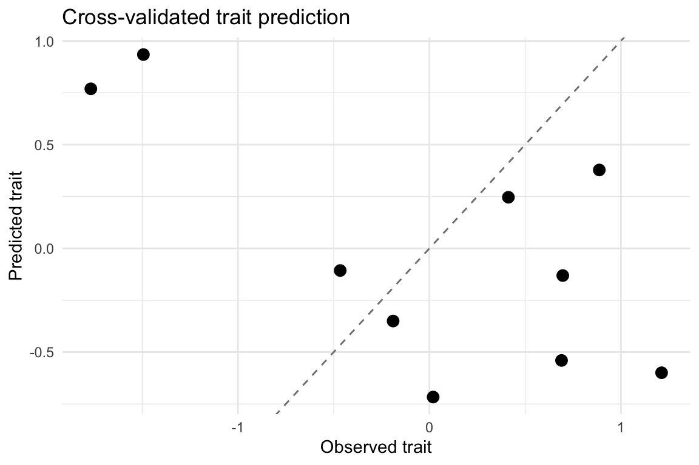
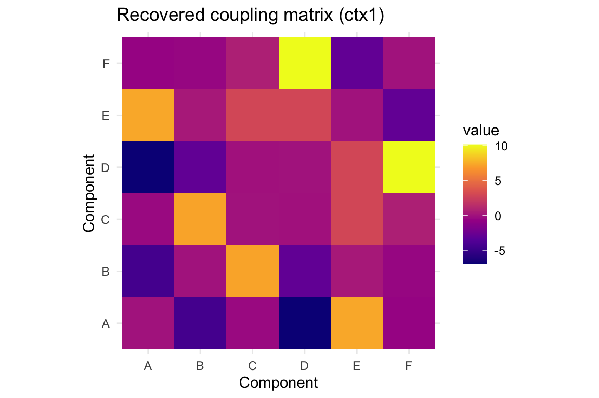

06_rest_traits.RmdThis vignette demonstrates how to analyze resting-state data for trait-level inference using multiPPI. We will:
mppi_sim_rest_* helpers.mppi_rest() for each subject with endogenous
modulators.mppi_rest_features() and link them to the trait with a
simple cross-validated model.All analyses run entirely in the low-rank basis returned by
mppi_rest(), so scaling and reproducibility are controlled
by default.
We generate ten subjects with a latent trait that modulates the
coupling strength of one endogenous context (ctx1). The
helper returns both the simulated data and the ground truth
subject-level amplitudes.
set.seed(1123)
cohort <- mppi_sim_rest_cohort(n_subj = 10,
contexts = c("ctx1", "ctx2"),
amp_base = c(0.30, 0.25),
trait_effect = c(0.6, 0.0),
amp_noise = 0.02,
obs_noise = 0.01,
T = 800,
V = 60,
r = 6)
str(cohort$trait)
#> num [1:10] 0.412 0.887 0.69 -1.494 1.212 ...
cohort$amplitudes[1:5, ]
#> ctx1 ctx2
#> [1,] 0.5536655 0.2465231
#> [2,] 0.8388519 0.2689718
#> [3,] 0.6899433 0.2163223
#> [4,] -0.6140258 0.2177515
#> [5,] 1.0391510 0.2448224The trait vector is scaled (mean zero, unit variance)
and linearly modulates the amplitude of ctx1. Context
ctx2 acts as a control without trait influence.
We now run mppi_rest() on each simulated subject. The
datasets returned by the simulator already include precomputed low-rank
loadings (loadings) and the modulators used to generate the
coupling (modulators). Passing them directly into the
wrapper avoids recomputation.
fits <- lapply(cohort$datasets, function(ds) {
mppi_rest(ds$Y,
modulators = ds$modulators,
basis = ds$loadings,
prewhiten = FALSE,
domain = "bold")
})
fits[[1]]
#> mppi_fit: 800 time points, 6 regions, 2 regressors
#> scale = normalized, backend = blas, packed = FALSE, basis=basis (r=6), domain=bold
#> Frobenius energy per regressor:
#> ctx1: 621
#> ctx2: 132
#> Top eigenvalues (regressor 1): 13.30, 8.59, 5.81Each mppi_fit stores the interaction matrices
(Delta) for every context along with metadata (domain,
basis rank, lagged variants). We can inspect an example:
delta_1 <- fits[[1]]$Delta[["ctx1"]]
round(delta_1[1:5, 1:5], 3)
#> [,1] [,2] [,3] [,4] [,5]
#> [1,] 0.000 -4.396 -0.417 -6.891 7.327
#> [2,] -4.396 0.000 7.197 -3.016 0.281
#> [3,] -0.417 7.197 0.000 -0.032 2.884
#> [4,] -6.891 -3.016 -0.032 0.000 2.853
#> [5,] 7.327 0.281 2.884 2.853 0.000We summarize each fit using mppi_rest_features(), which
returns a tidy table of Gain (G), Routing (R),
and mode magnitude (mag) per context and subject.
For the simple trait model we use the mean features per subject and
run mppi_rest_trait_cv(), a light ridge regression with
5-fold cross-validation.
feat_long <- mppi_rest_features(fits, aggregate = "none")
head(feat_long)
#> condition gain routing scale G R mag
#> 1 ctx1 0.2876866 0.000000e+00 normalized 0.2876866 0.000000e+00 24.92977
#> 2 ctx2 0.1374568 0.000000e+00 normalized 0.1374568 0.000000e+00 11.50227
#> 3 ctx1 -0.1506937 0.000000e+00 normalized -0.1506937 0.000000e+00 37.06866
#> 4 ctx2 0.2250018 7.303539e-17 normalized 0.2250018 7.303539e-17 10.53067
#> 5 ctx1 0.4406086 0.000000e+00 normalized 0.4406086 0.000000e+00 31.22196
#> 6 ctx2 -0.1506374 0.000000e+00 normalized -0.1506374 0.000000e+00 11.30607
#> subj
#> 1 1
#> 2 1
#> 3 2
#> 4 2
#> 5 3
#> 6 3
feat_mean <- mppi_rest_features(fits, aggregate = "mean")
feat_mean
#> subj G R mag
#> 1 1 0.21257168 0.000000e+00 18.216018
#> 2 2 0.03715404 3.651770e-17 23.799661
#> 3 3 0.14498557 0.000000e+00 21.264016
#> 4 4 -0.44177712 -3.587977e-17 20.140510
#> 5 5 -0.33228821 0.000000e+00 24.428368
#> 6 6 -0.08477115 -3.329337e-17 11.807285
#> 7 7 0.04857954 -3.781464e-17 7.961708
#> 8 8 0.03115994 -6.430986e-17 17.737221
#> 9 9 -0.33846955 0.000000e+00 11.766929
#> 10 10 0.21045193 -8.626854e-18 20.070380
cv_out <- mppi_rest_trait_cv(feat_long, y = setNames(cohort$trait, seq_along(fits)), k = 5)
cv_out$cv_r2
#> [1] -1.088826Cross-validated quantifies how much variance in the trait is explained by our normalized coupling features. We can visualize predicted vs observed trait values:
pred_df <- data.frame(
subj = as.integer(names(cv_out$pred)),
observed = cv_out$observed,
predicted = cv_out$pred
)
ggplot(pred_df, aes(observed, predicted)) +
geom_point(size = 3) +
geom_abline(slope = 1, intercept = 0, linetype = "dashed", colour = "grey50") +
labs(title = "Cross-validated trait prediction",
x = "Observed trait",
y = "Predicted trait") +
theme_minimal()
Because we know the ground-truth coupling templates from the
simulator, we can compare recovered interaction matrices against the
truth. mppi_sim_rest_dataset stashes the normalized
templates under truth$coupling.
truth_ctx1 <- cohort$datasets[[1]]$truth$coupling[["ctx1"]]
recovered_ctx1 <- fits[[1]]$Delta[["ctx1"]]
cor(as.vector(truth_ctx1), as.vector(recovered_ctx1))
#> [1] 0.9278079The high correlation indicates that multiPPI recovers the context-conditioned interaction pattern in the low-rank space. We can also visualize the heatmap for one subject:
mat_df <- as.data.frame(as.table(recovered_ctx1))
colnames(mat_df) <- c("row", "col", "value")
ggplot(mat_df, aes(row, col, fill = value)) +
geom_tile() +
scale_fill_viridis_c(option = "C") +
coord_equal() +
labs(title = "Recovered coupling matrix (ctx1)", x = "Component", y = "Component") +
theme_minimal()
For real resting-state datasets, the workflow follows the same structure:
fmri_dataset and select a basis
(basis = list(type = "pca", r = 100) is a good
default).mppi_rest() build endogenous modulators using
families such as states, bursts, and
envelopes (set include = ...).mppi_rest_features()
and model the trait with mppi_rest_trait_cv() or a custom
pipeline.Delta matrices to ROI/voxel
maps using existing helpers to interpret spatial patterns.Because multiPPI forms interactions in the low-rank neural or innovations domain and normalizes outputs, the features are robust to between-subject scaling differences—an essential property for trait studies.
sessionInfo()
#> R version 4.3.2 (2023-10-31)
#> Platform: aarch64-apple-darwin20 (64-bit)
#> Running under: macOS Sonoma 14.3
#>
#> Matrix products: default
#> BLAS: /Library/Frameworks/R.framework/Versions/4.3-arm64/Resources/lib/libRblas.0.dylib
#> LAPACK: /Library/Frameworks/R.framework/Versions/4.3-arm64/Resources/lib/libRlapack.dylib; LAPACK version 3.11.0
#>
#> locale:
#> [1] en_US.UTF-8/en_US.UTF-8/en_US.UTF-8/C/en_US.UTF-8/en_US.UTF-8
#>
#> time zone: America/Toronto
#> tzcode source: internal
#>
#> attached base packages:
#> [1] stats graphics grDevices utils datasets methods base
#>
#> other attached packages:
#> [1] dplyr_1.1.4 ggplot2_4.0.0 multiPPI_0.1.0
#>
#> loaded via a namespace (and not attached):
#> [1] gtable_0.3.6 jsonlite_2.0.0 compiler_4.3.2 tidyselect_1.2.1
#> [5] jquerylib_0.1.4 systemfonts_1.2.3 scales_1.4.0 textshaping_1.0.3
#> [9] yaml_2.3.10 fastmap_1.2.0 R6_2.6.1 labeling_0.4.3
#> [13] generics_0.1.4 knitr_1.50 htmlwidgets_1.6.4 tibble_3.3.0
#> [17] desc_1.4.3 bslib_0.9.0 pillar_1.11.1 RColorBrewer_1.1-3
#> [21] rlang_1.1.6 cachem_1.1.0 xfun_0.52 fs_1.6.6
#> [25] sass_0.4.10 S7_0.2.0 viridisLite_0.4.2 cli_3.6.5
#> [29] pkgdown_2.1.3 withr_3.0.2 magrittr_2.0.3 digest_0.6.37
#> [33] grid_4.3.2 lifecycle_1.0.4 vctrs_0.6.5 evaluate_1.0.4
#> [37] glue_1.8.0 farver_2.1.2 ragg_1.4.0 rmarkdown_2.29
#> [41] matrixStats_1.5.0 tools_4.3.2 pkgconfig_2.0.3 htmltools_0.5.8.1